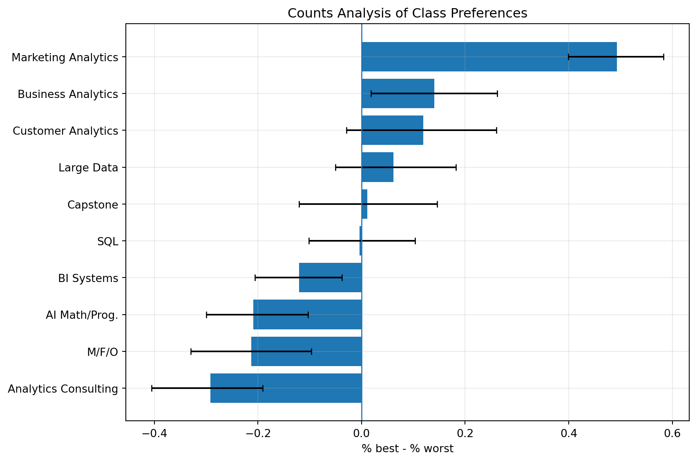
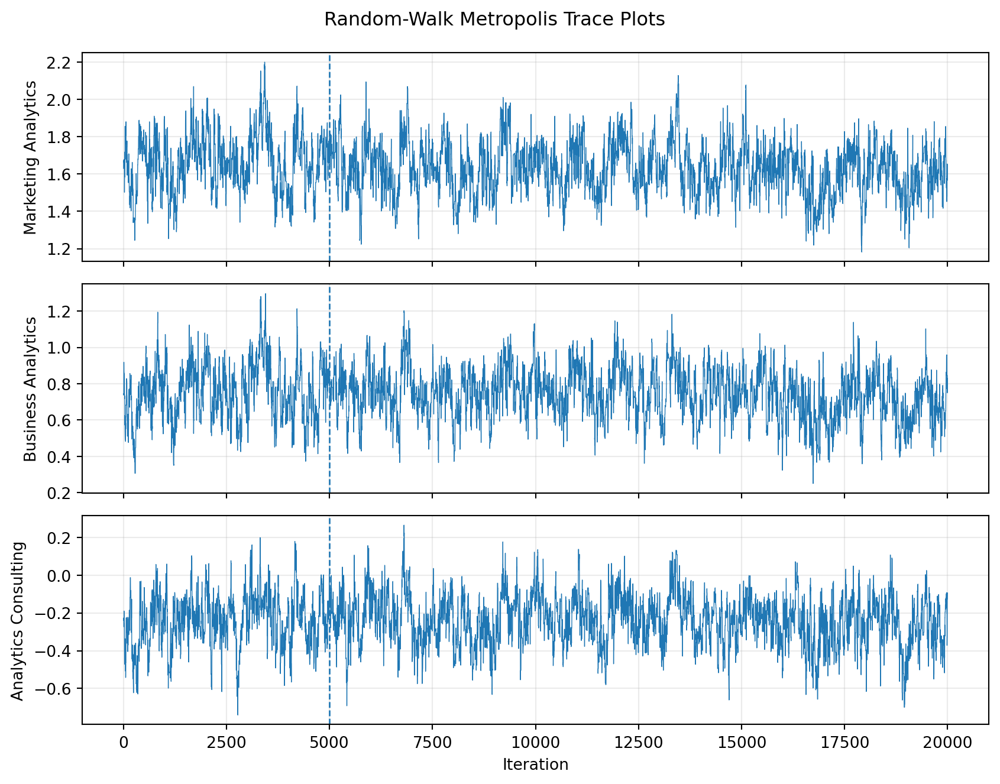
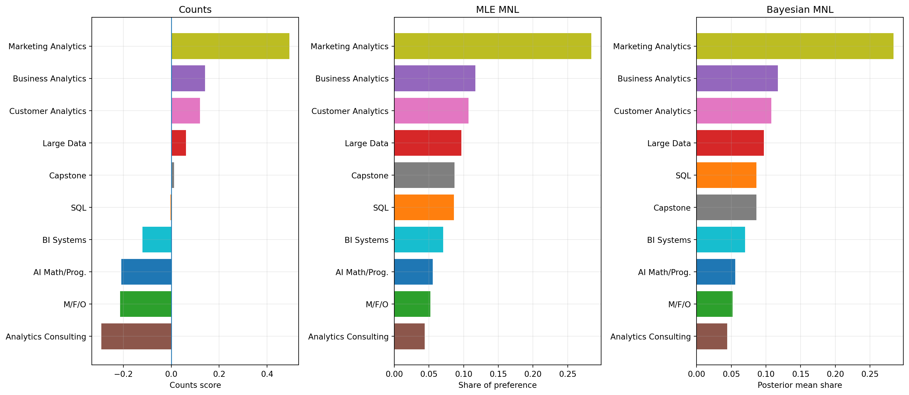

import os
import numpy as np
import pandas as pd
import matplotlib.pyplot as plt
from scipy.optimize import minimize
from IPython.display import display
plt.rcParams["figure.figsize"] = (9, 5)
plt.rcParams["axes.grid"] = True
plt.rcParams["grid.alpha"] = 0.25
pd.set_option("display.max_colwidth", 80)
def find_file(filename):
"""Search common Quarto locations so this post works from a blog subfolder."""
candidates = [
filename,
os.path.join(".", filename),
os.path.join("data", filename),
os.path.join("..", filename),
os.path.join("..", "data", filename),
os.path.join("..", "..", filename),
os.path.join("..", "..", "data", filename),
]
for path in candidates:
if os.path.exists(path):
return path
raise FileNotFoundError(f"Could not find {filename}. Put it next to this qmd file or in a data folder.")
DATA_PATH = find_file("maxdiff_design_and_choices.csv")
LABEL_PATH = find_file("maxdiff_item_labels.csv")
rng = np.random.default_rng(123)MaxDiff Analysis of MSBA Class Preferences
Counts, Maximum Likelihood, and Bayesian Estimation of the MNL Model
Introduction
This post analyzes student preferences for the ten core MSBA classes using a MaxDiff survey. MaxDiff, also called Best-Worst Scaling, is designed for settings where people can make reliable trade-offs but may not use numeric rating scales consistently. Instead of asking students to score every class from 1 to 10, the survey repeatedly showed a small set of classes and asked the respondent to choose the class they most preferred and the class they least preferred.
The goal is to estimate the relative appeal of each class in three ways. First, I use a simple counts analysis: the percentage of times a class was selected as best minus the percentage of times it was selected as worst. Second, I fit a multinomial logit (MNL) model by maximum likelihood. Third, I fit the same MNL model with a Bayesian random-walk Metropolis-Hastings sampler. The three methods should broadly agree on which classes are strongest and weakest, but they express the results differently: counts are descriptive, MLE gives model-based point estimates and standard errors, and the Bayesian analysis gives posterior uncertainty for both utilities and shares of preference.
The Data
The main file has one row per displayed item. The key columns are respondent ID, task number, position on the screen, item number, and response. A response of 1 means the item was chosen as best, -1 means it was chosen as worst, and 0 means it was shown but not selected.
One important cleaning step is needed. The raw file contains the ten labeled class items, but it also contains extra two-row follow-up tasks involving an unlabeled item 11. Those rows are not standard four-item MaxDiff tasks and do not contain a worst choice. Because this assignment is about the ten-class MaxDiff design, I filter to tasks with exactly four rows, exactly one best choice, exactly one worst choice, and items between 1 and 10.
raw = pd.read_csv(DATA_PATH, encoding="utf-8-sig")
labels = pd.read_csv(LABEL_PATH, encoding="utf-8-sig")
labels = labels.iloc[:, :2].rename(columns={"Item #": "Item", "Item": "Label"})
raw["Item"] = raw["Item"].astype(int)
labels["Item"] = labels["Item"].astype(int)
short_labels = {
1: "AI Math/Prog.",
2: "SQL",
3: "M/F/O",
4: "Large Data",
5: "Business Analytics",
6: "Analytics Consulting",
7: "Customer Analytics",
8: "Capstone",
9: "Marketing Analytics",
10: "BI Systems",
}
labels["Short Label"] = labels["Item"].map(short_labels)
sanity_raw = (
raw.groupby(["Record ID", "Task"])
.agg(
n_rows=("Response", "size"),
n_best=("Response", lambda x: (x == 1).sum()),
n_worst=("Response", lambda x: (x == -1).sum()),
n_zero=("Response", lambda x: (x == 0).sum()),
min_item=("Item", "min"),
max_item=("Item", "max"),
)
.reset_index()
)
sanity_raw["valid_maxdiff"] = (
(sanity_raw["n_rows"] == 4)
& (sanity_raw["n_best"] == 1)
& (sanity_raw["n_worst"] == 1)
& (sanity_raw["n_zero"] == 2)
& (sanity_raw["min_item"] >= 1)
& (sanity_raw["max_item"] <= 10)
)
valid_keys = sanity_raw.loc[sanity_raw["valid_maxdiff"], ["Record ID", "Task"]]
df = raw.merge(valid_keys, on=["Record ID", "Task"], how="inner")
N = df["Record ID"].nunique()
T_by_respondent = df.groupby("Record ID")["Task"].nunique()
J_by_task = df.groupby(["Record ID", "Task"]).size()
num_tasks = df[["Record ID", "Task"]].drop_duplicates().shape[0]
num_items = labels["Item"].nunique()
summary_table = pd.DataFrame(
{
"Quantity": [
"Raw task groups",
"Valid MaxDiff task groups used",
"Invalid/non-MaxDiff task groups excluded",
"Respondents",
"Tasks per respondent",
"Items per valid task",
"Total labeled class items",
],
"Value": [
len(sanity_raw),
num_tasks,
int((~sanity_raw["valid_maxdiff"]).sum()),
N,
f"{T_by_respondent.min()} to {T_by_respondent.max()}",
f"{J_by_task.min()} to {J_by_task.max()}",
num_items,
],
}
)
display(summary_table)| Quantity | Value | |
|---|---|---|
| 0 | Raw task groups | 1275 |
| 1 | Valid MaxDiff task groups used | 680 |
| 2 | Invalid/non-MaxDiff task groups excluded | 595 |
| 3 | Respondents | 85 |
| 4 | Tasks per respondent | 8 to 8 |
| 5 | Items per valid task | 4 to 4 |
| 6 | Total labeled class items | 10 |
After filtering, the analytic dataset has 85 respondents, 8 valid MaxDiff tasks per respondent, 4 class alternatives per task, and 10 labeled class items. The sanity check confirms that every retained task has exactly one best pick, one worst pick, and two unchosen items.
sanity_valid = (
df.groupby(["Record ID", "Task"])
.agg(
n_rows=("Response", "size"),
n_best=("Response", lambda x: (x == 1).sum()),
n_worst=("Response", lambda x: (x == -1).sum()),
n_zero=("Response", lambda x: (x == 0).sum()),
)
.reset_index()
)
invalid_retained = sanity_valid.query("n_rows != 4 or n_best != 1 or n_worst != 1 or n_zero != 2")
print(f"Invalid tasks remaining after filtering: {len(invalid_retained)}")
exposures = (
df.groupby("Item")
.size()
.rename("Times Shown")
.reset_index()
.merge(labels, on="Item")
.sort_values("Item")
)
display(exposures[["Item", "Short Label", "Times Shown"]])Invalid tasks remaining after filtering: 0| Item | Short Label | Times Shown | |
|---|---|---|---|
| 0 | 1 | AI Math/Prog. | 273 |
| 1 | 2 | SQL | 274 |
| 2 | 3 | M/F/O | 272 |
| 3 | 4 | Large Data | 276 |
| 4 | 5 | Business Analytics | 270 |
| 5 | 6 | Analytics Consulting | 267 |
| 6 | 7 | Customer Analytics | 276 |
| 7 | 8 | Capstone | 272 |
| 8 | 9 | Marketing Analytics | 274 |
| 9 | 10 | BI Systems | 266 |
The item exposure counts are balanced: each class appears between 266 and 276 times. That balance is important because it means simple best-minus-worst counts are not being driven by one class appearing much more often than another.
Counts Analysis
The counts analysis is the most transparent summary. For each class, I compute the share of exposures where it was chosen as best and the share of exposures where it was chosen as worst. The score is
\[ \text{score}_j = \%\text{best}_j - \%\text{worst}_j. \]
A positive score means the class was selected as best more often than worst. A negative score means the opposite. A score near zero means the class is either near the middle or has mixed appeal.
counts = (
df.groupby("Item")
.agg(
times_shown=("Response", "size"),
times_best=("Response", lambda x: (x == 1).sum()),
times_worst=("Response", lambda x: (x == -1).sum()),
)
.reset_index()
.merge(labels, on="Item")
)
counts["pct_best"] = counts["times_best"] / counts["times_shown"]
counts["pct_worst"] = counts["times_worst"] / counts["times_shown"]
counts["count_score"] = counts["pct_best"] - counts["pct_worst"]
counts["count_rank"] = counts["count_score"].rank(method="min", ascending=False).astype(int)
counts_display = counts.sort_values("count_score", ascending=False)[
["Item", "Short Label", "times_shown", "times_best", "times_worst", "pct_best", "pct_worst", "count_score", "count_rank"]
].copy()
for col in ["pct_best", "pct_worst", "count_score"]:
counts_display[col] = counts_display[col].round(3)
display(counts_display)| Item | Short Label | times_shown | times_best | times_worst | pct_best | pct_worst | count_score | count_rank | |
|---|---|---|---|---|---|---|---|---|---|
| 8 | 9 | Marketing Analytics | 274 | 147 | 12 | 0.536 | 0.044 | 0.493 | 1 |
| 4 | 5 | Business Analytics | 270 | 93 | 55 | 0.344 | 0.204 | 0.141 | 2 |
| 6 | 7 | Customer Analytics | 276 | 104 | 71 | 0.377 | 0.257 | 0.120 | 3 |
| 3 | 4 | Large Data | 276 | 77 | 60 | 0.279 | 0.217 | 0.062 | 4 |
| 7 | 8 | Capstone | 272 | 72 | 69 | 0.265 | 0.254 | 0.011 | 5 |
| 1 | 2 | SQL | 274 | 55 | 56 | 0.201 | 0.204 | -0.004 | 6 |
| 9 | 10 | BI Systems | 266 | 23 | 55 | 0.086 | 0.207 | -0.120 | 7 |
| 0 | 1 | AI Math/Prog. | 273 | 33 | 90 | 0.121 | 0.330 | -0.209 | 8 |
| 2 | 3 | M/F/O | 272 | 43 | 101 | 0.158 | 0.371 | -0.213 | 9 |
| 5 | 6 | Analytics Consulting | 267 | 33 | 111 | 0.124 | 0.416 | -0.292 | 10 |
I also bootstrap the count scores by resampling respondents. This keeps the repeated tasks from the same respondent together, which is more appropriate than resampling individual rows independently.
B = 1000
respondents = df["Record ID"].unique()
R = len(respondents)
shown_by_resp = np.zeros((R, 10))
best_by_resp = np.zeros((R, 10))
worst_by_resp = np.zeros((R, 10))
for i, rid in enumerate(respondents):
g = df[df["Record ID"] == rid]
shown_by_resp[i] = g.groupby("Item").size().reindex(range(1, 11), fill_value=0).values
best_by_resp[i] = g[g["Response"] == 1].groupby("Item").size().reindex(range(1, 11), fill_value=0).values
worst_by_resp[i] = g[g["Response"] == -1].groupby("Item").size().reindex(range(1, 11), fill_value=0).values
boot_scores = np.empty((B, 10))
for b in range(B):
idx = rng.integers(0, R, size=R)
shown = shown_by_resp[idx].sum(axis=0)
best = best_by_resp[idx].sum(axis=0)
worst = worst_by_resp[idx].sum(axis=0)
boot_scores[b] = best / shown - worst / shown
ci = np.quantile(boot_scores, [0.025, 0.975], axis=0)
counts["score_lo"] = ci[0]
counts["score_hi"] = ci[1]plot_counts = counts.sort_values("count_score", ascending=True)
xerr = np.vstack([
plot_counts["count_score"] - plot_counts["score_lo"],
plot_counts["score_hi"] - plot_counts["count_score"],
])
fig, ax = plt.subplots(figsize=(9, 6))
ax.barh(plot_counts["Short Label"], plot_counts["count_score"], xerr=xerr, capsize=3)
ax.axvline(0, linewidth=1)
ax.set_xlabel("% best - % worst")
ax.set_ylabel("")
ax.set_title("Counts Analysis of Class Preferences")
plt.tight_layout()
plt.show()
The counts analysis shows a clear winner: MGTA 495 Marketing Analytics has by far the highest score. It was selected as best in 53.6% of its appearances and worst in only 4.4%. The next two classes are MGTA 453 Business Analytics and MGTA 455 Customer Analytics. The weakest count scores are for MGTA 444 Analytics Consulting, MGTA 451 Marketing/Finance/Operations, and MGTA 403 AI Math, Programming, and Analytics.
From MaxDiff Data to MNL Choices
The MNL model treats each task as a choice among the classes shown on that screen. Each item \(j\) receives a utility coefficient \(\beta_j\). For a task showing items \(\{a,b,c,d\}\), the probability that item \(b\) is chosen as best is the soft-max probability
\[ P(\text{best}=b) = \frac{\exp(\beta_b)}{\exp(\beta_a)+\exp(\beta_b)+\exp(\beta_c)+\exp(\beta_d)}. \]
The worst choice is modeled as a choice from the remaining three items after removing the selected best item, but with utilities reversed. If item \(c\) is chosen as worst after item \(b\) is chosen as best, then
\[ P(\text{worst}=c \mid \text{best}=b) = \frac{\exp(-\beta_c)}{\sum_{j \in \text{shown}\setminus b}\exp(-\beta_j)}. \]
The model is identified only up to an additive constant: adding the same number to every \(\beta_j\) does not change the choice probabilities. I therefore set \(\beta_1 = 0\) and estimate the remaining nine coefficients relative to item 1.
# Convert row-level data into one row per MaxDiff task.
task_rows = []
for (rid, task), g in df.groupby(["Record ID", "Task"]):
g = g.sort_values("Position")
shown_items = g["Item"].to_numpy(dtype=int)
best_item = int(g.loc[g["Response"] == 1, "Item"].iloc[0])
worst_item = int(g.loc[g["Response"] == -1, "Item"].iloc[0])
task_rows.append({"Record ID": rid, "Task": task, "shown": shown_items, "best": best_item, "worst": worst_item})
tasks = pd.DataFrame(task_rows).sort_values(["Record ID", "Task"]).reset_index(drop=True)
# Use zero-based item indices internally.
items_mat = np.vstack(tasks["shown"].values) - 1
best_idx = tasks["best"].to_numpy(dtype=int) - 1
worst_idx = tasks["worst"].to_numpy(dtype=int) - 1
remaining_after_best = items_mat != best_idx[:, None]
display(tasks.head())| Record ID | Task | shown | best | worst | |
|---|---|---|---|---|---|
| 0 | 69fb85fbd66b452e6decf4f7 | 1 | [5, 7, 4, 1] | 7 | 1 |
| 1 | 69fb85fbd66b452e6decf4f7 | 2 | [8, 3, 10, 9] | 10 | 8 |
| 2 | 69fb85fbd66b452e6decf4f7 | 3 | [3, 5, 2, 6] | 2 | 6 |
| 3 | 69fb85fbd66b452e6decf4f7 | 4 | [6, 4, 8, 7] | 7 | 6 |
| 4 | 69fb85fbd66b452e6decf4f7 | 5 | [2, 9, 7, 1] | 2 | 1 |
MNL via Maximum Likelihood
The log-likelihood sums the best and worst choice contributions across all valid MaxDiff tasks:
\[ \ell(\boldsymbol{\beta}) = \sum_{t} \left[ \beta_{j^*_{b,t}} - \log\sum_{j\in S_t}\exp(\beta_j) - \beta_{j^*_{w,t}} - \log\sum_{j\in S_t\setminus\{j^*_{b,t}\}}\exp(-\beta_j) \right], \]
where \(S_t\) is the set of four classes shown in task \(t\), \(j^*_{b,t}\) is the best choice, and \(j^*_{w,t}\) is the worst choice.
def full_beta(theta):
"""Insert the fixed reference coefficient beta_1 = 0."""
beta = np.zeros(10)
beta[1:] = theta
return beta
def row_logsumexp(a):
"""Numerically stable row-wise log-sum-exp."""
m = a.max(axis=1)
return m + np.log(np.exp(a - m[:, None]).sum(axis=1))
def masked_row_logsumexp(a, mask):
"""Row-wise log-sum-exp, excluding entries where mask is False."""
masked = np.where(mask, a, -1e300)
m = masked.max(axis=1)
return m + np.log(np.exp(masked - m[:, None]).sum(axis=1))
def ll(theta):
beta = full_beta(theta)
shown_utilities = beta[items_mat]
best_part = beta[best_idx] - row_logsumexp(shown_utilities)
worst_part = -beta[worst_idx] - masked_row_logsumexp(-shown_utilities, remaining_after_best)
return float(np.sum(best_part + worst_part))
def nll(theta):
return -ll(theta)out = minimize(
nll,
x0=np.zeros(9),
method="BFGS",
options={"gtol": 1e-4, "maxiter": 5000},
)
theta_hat = out.x
beta_hat = full_beta(theta_hat)
print(f"Converged: {out.success}")
print(f"Maximized log-likelihood: {-out.fun:.3f}")Converged: True
Maximized log-likelihood: -1572.731To estimate standard errors, I compute a finite-difference Hessian of the negative log-likelihood at the optimum and invert it. Since \(\beta_1\) is fixed as the reference point, it does not have a standard error.
def finite_hessian(f, x, eps=1e-4):
x = np.asarray(x, dtype=float)
n = len(x)
H = np.zeros((n, n))
fx = f(x)
for i in range(n):
ei = np.zeros(n)
ei[i] = eps
H[i, i] = (f(x + ei) - 2 * fx + f(x - ei)) / (eps**2)
for j in range(i + 1, n):
ej = np.zeros(n)
ej[j] = eps
H[i, j] = H[j, i] = (
f(x + ei + ej)
- f(x + ei - ej)
- f(x - ei + ej)
+ f(x - ei - ej)
) / (4 * eps**2)
return H
H = finite_hessian(nll, theta_hat)
vcov = np.linalg.inv(H)
se = np.r_[np.nan, np.sqrt(np.diag(vcov))]
mle_shares = np.exp(beta_hat) / np.exp(beta_hat).sum()
mle_table = pd.DataFrame(
{
"Item": np.arange(1, 11),
"beta_mle": beta_hat,
"se": se,
"share_mle": mle_shares,
}
).merge(labels, on="Item")
mle_table["mle_rank"] = mle_table["share_mle"].rank(method="min", ascending=False).astype(int)
mle_display = mle_table.sort_values("share_mle", ascending=False)[
["Item", "Short Label", "beta_mle", "se", "share_mle", "mle_rank"]
].copy()
mle_display["beta_mle"] = mle_display["beta_mle"].round(3)
mle_display["se"] = mle_display["se"].map(lambda x: "fixed" if pd.isna(x) else f"{x:.3f}")
mle_display["share_mle"] = mle_display["share_mle"].round(3)
display(mle_display)| Item | Short Label | beta_mle | se | share_mle | mle_rank | |
|---|---|---|---|---|---|---|
| 8 | 9 | Marketing Analytics | 1.630 | 0.146 | 0.284 | 1 |
| 4 | 5 | Business Analytics | 0.744 | 0.142 | 0.117 | 2 |
| 6 | 7 | Customer Analytics | 0.656 | 0.142 | 0.107 | 3 |
| 3 | 4 | Large Data | 0.555 | 0.140 | 0.097 | 4 |
| 7 | 8 | Capstone | 0.443 | 0.140 | 0.087 | 5 |
| 1 | 2 | SQL | 0.438 | 0.137 | 0.086 | 6 |
| 9 | 10 | BI Systems | 0.236 | 0.137 | 0.070 | 7 |
| 0 | 1 | AI Math/Prog. | 0.000 | fixed | 0.056 | 8 |
| 2 | 3 | M/F/O | -0.067 | 0.139 | 0.052 | 9 |
| 5 | 6 | Analytics Consulting | -0.239 | 0.141 | 0.044 | 10 |
The MLE ranking is almost the same as the counts ranking. Marketing Analytics is again the strongest class by a wide margin, with an estimated share of preference of about 28.4%. Business Analytics and Customer Analytics are the next two. The bottom three are again AI Math/Programming, Marketing/Finance/Operations, and Analytics Consulting. The MNL model is more structured than counts because every shown item enters the probability denominator, so the model uses information from both chosen and unchosen alternatives.
MNL via Bayesian Estimation
The Bayesian model uses the same likelihood but adds a weakly informative normal prior:
\[ \boldsymbol{\beta} \sim N(\mathbf{0}, 10I). \]
The posterior is proportional to likelihood times prior:
\[ \pi(\boldsymbol{\beta}\mid \boldsymbol{y}) \propto L(\boldsymbol{\beta})\pi(\boldsymbol{\beta}). \]
I sample from the posterior using a random-walk Metropolis-Hastings algorithm. The chain starts at the MLE, proposes a normal perturbation to all nine free coefficients, and accepts or rejects the proposal according to the posterior density ratio.
prior_var = 10.0
def log_post(theta):
log_prior = -0.5 * np.sum(theta**2 / prior_var) - 0.5 * len(theta) * np.log(2 * np.pi * prior_var)
return ll(theta) + log_prior
def mh(beta0, n_iter=20000, step=0.08, seed=2026):
rng_local = np.random.default_rng(seed)
K = len(beta0)
draws = np.empty((n_iter, K))
beta = beta0.copy()
lp = log_post(beta)
accept = 0
for t in range(n_iter):
beta_star = beta + rng_local.normal(0, step, size=K)
lp_star = log_post(beta_star)
if np.log(rng_local.random()) < lp_star - lp:
beta = beta_star
lp = lp_star
accept += 1
draws[t, :] = beta
return draws, accept / n_iter# A short tuning run. A step size around 0.08 gives an acceptance rate in the target range.
tuning_results = []
for step in [0.06, 0.08, 0.10, 0.12]:
_, ar = mh(theta_hat, n_iter=1500, step=step, seed=1)
tuning_results.append({"step": step, "accept_rate": ar})
tuning_table = pd.DataFrame(tuning_results)
tuning_table["accept_rate"] = tuning_table["accept_rate"].round(3)
display(tuning_table)| step | accept_rate | |
|---|---|---|
| 0 | 0.06 | 0.415 |
| 1 | 0.08 | 0.289 |
| 2 | 0.10 | 0.175 |
| 3 | 0.12 | 0.141 |
n_iter = 20000
burn = int(0.25 * n_iter)
step = 0.08
draws, accept_rate = mh(theta_hat, n_iter=n_iter, step=step, seed=2026)
post = draws[burn:, :]
print(f"Iterations: {n_iter}")
print(f"Burn-in discarded: {burn}")
print(f"Final acceptance rate: {accept_rate:.3f}")Iterations: 20000
Burn-in discarded: 5000
Final acceptance rate: 0.282trace_items = [9, 5, 6]
fig, axes = plt.subplots(len(trace_items), 1, figsize=(9, 7), sharex=True)
for ax, item in zip(axes, trace_items):
if item == 1:
trace = np.zeros(n_iter)
else:
trace = draws[:, item - 2]
ax.plot(trace, linewidth=0.5)
ax.axvline(burn, linestyle="--", linewidth=1)
ax.set_ylabel(short_labels[item])
axes[-1].set_xlabel("Iteration")
fig.suptitle("Random-Walk Metropolis Trace Plots")
plt.tight_layout()
plt.show()
The traces look like stationary fuzzy caterpillars after burn-in rather than monotone drifts. The final acceptance rate is about 28%, which is in the desired tuning range for this sampler.
beta_draws = np.column_stack([np.zeros(post.shape[0]), post])
beta_post_mean = beta_draws.mean(axis=0)
beta_ci = np.quantile(beta_draws, [0.025, 0.975], axis=0)
share_draws = np.exp(beta_draws) / np.exp(beta_draws).sum(axis=1, keepdims=True)
share_post_mean = share_draws.mean(axis=0)
share_ci = np.quantile(share_draws, [0.025, 0.975], axis=0)
bayes_table = pd.DataFrame(
{
"Item": np.arange(1, 11),
"beta_post_mean": beta_post_mean,
"beta_lo": beta_ci[0],
"beta_hi": beta_ci[1],
"share_bayes": share_post_mean,
"share_lo": share_ci[0],
"share_hi": share_ci[1],
}
).merge(labels, on="Item")
bayes_table["bayes_rank"] = bayes_table["share_bayes"].rank(method="min", ascending=False).astype(int)
bayes_display = bayes_table.sort_values("share_bayes", ascending=False)[
["Item", "Short Label", "beta_post_mean", "beta_lo", "beta_hi", "share_bayes", "share_lo", "share_hi", "bayes_rank"]
].copy()
for col in ["beta_post_mean", "beta_lo", "beta_hi", "share_bayes", "share_lo", "share_hi"]:
bayes_display[col] = bayes_display[col].round(3)
display(bayes_display)| Item | Short Label | beta_post_mean | beta_lo | beta_hi | share_bayes | share_lo | share_hi | bayes_rank | |
|---|---|---|---|---|---|---|---|---|---|
| 8 | 9 | Marketing Analytics | 1.629 | 1.366 | 1.897 | 0.284 | 0.243 | 0.331 | 1 |
| 4 | 5 | Business Analytics | 0.743 | 0.466 | 1.004 | 0.117 | 0.096 | 0.141 | 2 |
| 6 | 7 | Customer Analytics | 0.657 | 0.402 | 0.925 | 0.108 | 0.089 | 0.128 | 3 |
| 3 | 4 | Large Data | 0.553 | 0.294 | 0.835 | 0.097 | 0.080 | 0.117 | 4 |
| 1 | 2 | SQL | 0.437 | 0.160 | 0.695 | 0.086 | 0.070 | 0.105 | 5 |
| 7 | 8 | Capstone | 0.436 | 0.173 | 0.705 | 0.086 | 0.071 | 0.104 | 6 |
| 9 | 10 | BI Systems | 0.229 | -0.030 | 0.478 | 0.070 | 0.058 | 0.084 | 7 |
| 0 | 1 | AI Math/Prog. | 0.000 | 0.000 | 0.000 | 0.056 | 0.046 | 0.066 | 8 |
| 2 | 3 | M/F/O | -0.073 | -0.341 | 0.202 | 0.052 | 0.042 | 0.063 | 9 |
| 5 | 6 | Analytics Consulting | -0.239 | -0.505 | 0.016 | 0.044 | 0.036 | 0.054 | 10 |
The Bayesian posterior means are extremely close to the MLE estimates. This is expected because the prior is weak and the sample contains 680 valid MaxDiff tasks. The Bayesian output is especially useful for the shares: instead of deriving a separate delta-method approximation, I compute the share for every posterior draw and then take posterior means and quantiles directly.
Comparing the Three Methods
comparison = (
counts[["Item", "Short Label", "count_score", "count_rank"]]
.merge(mle_table[["Item", "share_mle", "mle_rank"]], on="Item")
.merge(bayes_table[["Item", "share_bayes", "bayes_rank"]], on="Item")
.sort_values("mle_rank")
)
comparison_display = comparison.copy()
for col in ["count_score", "share_mle", "share_bayes"]:
comparison_display[col] = comparison_display[col].round(3)
display(comparison_display)| Item | Short Label | count_score | count_rank | share_mle | mle_rank | share_bayes | bayes_rank | |
|---|---|---|---|---|---|---|---|---|
| 8 | 9 | Marketing Analytics | 0.493 | 1 | 0.284 | 1 | 0.284 | 1 |
| 4 | 5 | Business Analytics | 0.141 | 2 | 0.117 | 2 | 0.117 | 2 |
| 6 | 7 | Customer Analytics | 0.120 | 3 | 0.107 | 3 | 0.108 | 3 |
| 3 | 4 | Large Data | 0.062 | 4 | 0.097 | 4 | 0.097 | 4 |
| 7 | 8 | Capstone | 0.011 | 5 | 0.087 | 5 | 0.086 | 6 |
| 1 | 2 | SQL | -0.004 | 6 | 0.086 | 6 | 0.086 | 5 |
| 9 | 10 | BI Systems | -0.120 | 7 | 0.070 | 7 | 0.070 | 7 |
| 0 | 1 | AI Math/Prog. | -0.209 | 8 | 0.056 | 8 | 0.056 | 8 |
| 2 | 3 | M/F/O | -0.213 | 9 | 0.052 | 9 | 0.052 | 9 |
| 5 | 6 | Analytics Consulting | -0.292 | 10 | 0.044 | 10 | 0.044 | 10 |
color_map = {item: plt.cm.tab10(i) for i, item in enumerate(range(1, 11))}
fig, axes = plt.subplots(1, 3, figsize=(16, 7))
panels = [
(counts, "count_score", "Counts score", "Counts"),
(mle_table, "share_mle", "Share of preference", "MLE MNL"),
(bayes_table, "share_bayes", "Posterior mean share", "Bayesian MNL"),
]
for ax, (table, value_col, xlab, title) in zip(axes, panels):
p = table.sort_values(value_col, ascending=True)
ax.barh(p["Short Label"], p[value_col], color=[color_map[i] for i in p["Item"]])
ax.set_xlabel(xlab)
ax.set_ylabel("")
ax.set_title(title)
if value_col == "count_score":
ax.axvline(0, linewidth=1)
plt.tight_layout()
plt.show()
The three methods tell almost the same substantive story. All three put Marketing Analytics first by a large margin, followed by Business Analytics and Customer Analytics. All three put Analytics Consulting last, with Marketing/Finance/Operations and AI Math/Programming also near the bottom. The main disagreement is tiny: the Bayesian posterior mean puts SQL slightly ahead of Capstone, while counts and MLE put Capstone slightly ahead of SQL. That difference is not substantively meaningful because the two shares are nearly identical.
The counts method is easy to explain and useful for a quick dashboard. The MNL model adds a behavioral choice model: each task contributes information through the full set of displayed alternatives, not only through the selected best and worst items. The Bayesian model adds a convenient uncertainty workflow, especially for transformed quantities such as preference shares.
Discussion
For a non-technical reader, the main finding is straightforward: students in this sample appear most enthusiastic about MGTA 495 Marketing Analytics, MGTA 453 Business Analytics, and MGTA 455 Customer Analytics. Marketing Analytics is the clear standout across all three analyses. The least preferred courses in this survey are MGTA 444 Analytics Consulting, MGTA 451 Marketing/Finance/Operations, and MGTA 403 AI Math, Programming, and Analytics.
Methodologically, the three approaches answer slightly different questions. Counts are best when the goal is a quick descriptive summary. Maximum-likelihood MNL is better when I want a formal model, utility estimates, standard errors, and shares of preference. Bayesian MNL is most useful when I want uncertainty on derived quantities, such as shares, simulations, or future extensions of the model.
There are several caveats. This is a sample of MSBA students who took this particular survey, so the results may not generalize to all future students. Preferences may also depend on whether students have already taken a class, which instructor they expect, how difficult they believe the course will be, and where they are in the program. If I had more time, I would extend this model hierarchically to estimate individual-level preferences and examine whether preferences differ by student background or career goals.